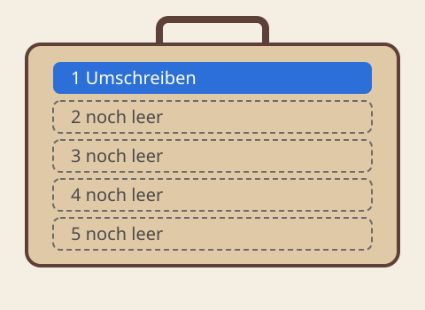

Werkzeug 1: Ein fehlendes Wort umschreiben
Mit einem KI-Tutor lernen
Ein KI-Tutor erklärt dir diese Seite und hilft dir bei den Aufgaben. Wähl deinen Assistenten:
Mit Claude öffnen Mit ChatGPT öffnen Mit Mistral Vibe öffnen
Du nutzt dein eigenes Konto beim Anbieter. Der Assistent ist kein Angebot von lernapps.net: lernapps liefert nur Inhalte und Aufgaben. Die Wahl gilt für alle Seiten, nur auf diesem Gerät.
Ein Wort fehlt im Klassenchat
Du kennst das: Du willst etwas sagen, aber ein Wort fehlt dir. Sophie geht es im Klassenchat so. Dort schreiben auch Ellie, Amir und ihr Lehrer Mr Hill. Lies den Chat und achte darauf, was sie tut. Das kannst du danach: Du umschreibst ein Wort, das dir fehlt, mit einem Relativsatz oder mit seinem Gegenteil.
(1) Sophie: Hi Ellie! I am in the shop with Mrs Parker. I want to buy a … sorry, I don't know the word!
(2) Ellie: Can you tell me what it is? Then I can help.
(3) Sophie: It's a thing which you use to get rid of pencil lines.
(4) Ellie: Ah, a rubber! They are next to the pencils.
(5) Sophie: Thank you! Amir, what is the word for the man who has the keys to the whole building?
(6) Amir: That's the caretaker. He looks after the school.
(7) Mr Hill: Well done, Sophie! If you don't know a word, don't stop. Say what the thing does. Or use the opposite: you don't know "expensive", but you know "cheap". Say "not cheap".
(8) Sophie: Thanks! Then I can say: "This pen is not cheap."
| Englisch | Beispiel · Hinweis | Deutsch |
|---|---|---|
| rubber | So sagt man es in Großbritannien. | der Radiergummi |
| caretaker | der Hausmeister | |
| get rid of | loswerden, entfernen |
Aufgabe
Lösung
Sie schreibt das Wort auf Deutsch.
Ellie kann kein Deutsch, und Sophie will Englisch sprechen.
Sie sagt, wofür man die Sache braucht. richtige Antwort
Sie beschreibt die Sache, und Ellie errät das Wort.
Sie hört auf zu schreiben.
Sophie schreibt weiter. Das lobt Mr Hill später.
Beschreibe die Sache mit Wörtern, die du kennst.
Die Werkzeugkarte Umschreiben
Ein Werkzeug ist hier ein Trick, mit dem du dir bei Wörtern hilfst. Die Werkzeuge liegen in einem Koffer. Auf der Werkzeugkarte steht, wie das Werkzeug geht.

© CC-BY-4.0Der Koffer hat erst ein Werkzeug.
| Weg | Was du tust | Beispiel |
|---|---|---|
| A | Sag mit einem Relativsatz, was es ist und was es tut. Für eine Sache nimmst du which oder that, für eine Person who oder that. | a thing which you wear on your head · a person who works in a hospital |
| B | Oder nimm ein Wort, das du kennst, und sag das Gegenteil mit not. | Dir fehlt old, du kennst new: not new |
Merke
Weg B klappt, wenn es zu dem Wort genau ein Gegenteil gibt. Setze not direkt vor das Gegenteil.
Übung
Aufgabe
Lösung
Zeile (1)
In Zeile (1) sucht Sophie ein Wort für eine Sache.
Zeile (5) richtige Antwort
Das Wort who zeigt, dass es um eine Person geht.
Zeile (7)
In Zeile (7) gibt Mr Hill einen Rat.
Das Wort who im Relativsatz steht für eine Person.
Aufgabe
Wähle das Wort, das zur Beschreibung passt.
Tipp
Frage dich, was die Person tut oder wofür man die Sache braucht.
- She is a person who plays games for a team. → She is a ….
- It is a thing which you use to draw straight lines. It has numbers on it. → It is a ….
Lösung
- She is a player.
- It is a ruler.
Aufgabe
Lösung
Richtige Antwort: 1. it is, 2. a thing, 3. which, 4. you use, 5. to open, 6. a door
Erst steht, was es ist, dann which und was man damit tut.
Aufgabe
Schreibe den Satz auf Englisch. Er umschreibt das Wort mit einem Relativsatz.
Tipp
Denke an die Karte. Erst sagst du, ob es eine Sache oder eine Person ist, dann kommt which, that oder who und dann, was sie tut.
- Ein Messer ist eine Sache, mit der man Brot schneidet.
- Eine Lehrerin ist eine Person, die Kinder in der Schule unterrichtet.
- Ein Koch ist eine Person, die in der Küche Essen macht.
Lösung
- A knife is a thing which you use to cut bread. (auch richtig: A knife is a thing which you cut bread with.; A knife is a thing which cuts bread.; A knife is a thing which you can cut bread with.; A knife is a thing that you use to cut bread.; A knife is a thing that you cut bread with.; A knife is a thing that cuts bread.; A knife is a thing that you can cut bread with.)
- A teacher is a person who teaches children at school. (auch richtig: A teacher is a person who teaches children in school.; A teacher is a person who teaches kids at school.; A teacher is a person who teaches kids in school.; A teacher is a person who teaches pupils at school.; A teacher is a person who teaches pupils in school.; A teacher is a person who teaches students at school.; A teacher is a person who teaches students in school.; A teacher is a person that teaches children at school.; A teacher is a person that teaches children in school.; A teacher is a person that teaches kids at school.; A teacher is a person that teaches kids in school.; A teacher is a person that teaches pupils at school.; A teacher is a person that teaches pupils in school.; A teacher is a person that teaches students at school.; A teacher is a person that teaches students in school.)
- A cook is a person who makes food in the kitchen. (auch richtig: A cook is a person who makes meals in the kitchen.; A cook is a person who prepares food in the kitchen.; A cook is a person who prepares meals in the kitchen.; A cook is a person who cooks food in the kitchen.; A cook is a person who cooks meals in the kitchen.; A cook is a person who cooks in the kitchen.; A cook is a person that makes food in the kitchen.; A cook is a person that makes meals in the kitchen.; A cook is a person that prepares food in the kitchen.; A cook is a person that prepares meals in the kitchen.; A cook is a person that cooks food in the kitchen.; A cook is a person that cooks meals in the kitchen.; A cook is a person that cooks in the kitchen.)
Aufgabe
Lösung
It is very difficult.
very difficult heißt sehr schwer. Das ist nicht easy, sondern das Gegenteil mit very.
It is not difficult. richtige Antwort
Das Gegenteil von difficult mit not umschreibt easy.
It is a bit difficult.
a bit difficult heißt ein bisschen schwer. Das ist nicht easy.
Mit not und dem Gegenteil umschreibst du easy.
Selbst umschreiben
Offene Aufgabe
Wähle eine Sache aus deiner Schultasche und umschreibe sie in zwei bis drei englischen Sätzen, ohne ihren Namen zu nennen.
Eine gute Antwort enthält:
Lösung
Ein Beispiel für eine Trinkflasche: It is a thing which you take to school. You use it to drink water. It is not small.
Wie es weitergeht
Das erste Werkzeug liegt im Koffer. Im nächsten Chat kennt Sophie ein Wort nicht und erschließt es über seine Wortfamilie.
Fehler gefunden oder eine Idee für diese App?